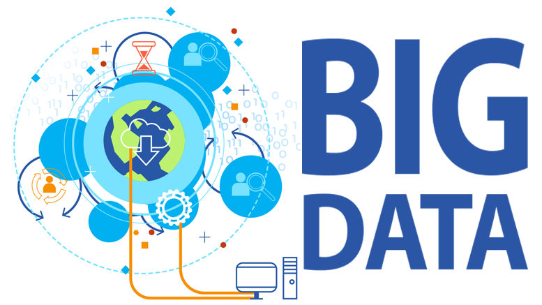

The present age of IT, the 2010’s, saw the explosion of “big data”. As the evolving frameworks that supported the IT Service Management industry continued to grow and mature, it became necessary to track its progress through the use of metrics. In order to correctly collect and analyze these metrics, may help desk professionals became full-time data analysts. This collection of data and the use and analysis of it became one of the defining features of this decade. Internet technology continued to grow and become faster and faster, with more and more bandwidth, and processing power continued to grow and become more readily available.

These changes made way for the use of sophisticated artificial intelligences, which have helped to keep the help desk industry afloat amidst the constant pressure IT requests. The programs allow technicians to pass off the most common and easily fixable solutions to computerized entities, freeing up time for the workers to take on more difficult problems and to mature their processes.
Another big change for help desks came in the popularization of knowledge bases, internal data stores that allow technician to quickly become adept at a large variety of problems and to be able to look up solutions to problems that have happened in the past. Through the implementation of knowledge bases, help desks can reduce training time considerably and can improve first contact resolution rates. This helps to free up resources that an organization can invest either back into the help desk or into other areas of the company. Some third party help desks rely entirely on the use of knowledge bases and provide support for many different organizations at the same time.
The 2010’s at A&M are (or should be) very familiar to all of us. During this time, the centralised help desk, or Help Desk Central, has moved from an ad hoc group of student workers, to one of the premiere help desks in all of higher education. They are responsible for the support of tens of thousands of student accounts, a multiplicity of shared services, and a growing number of campuses from all across the Texas A&M System. They have formally adopted the ITIL framework and have instituted a number of different sub-processes to ensure that the campus is well-provisioned with IT help.
The campus infrastructure has also continued to grow greatly. While the 2000’s saw the implementation of a 10MB backbone. The 2010’s have seen the plan for a backbone that is ten thousand times larger (100GB). Together with the Lonestar Education and Research Network, these networks represent some of the largest research networks in the world.
Previous page... Next page...